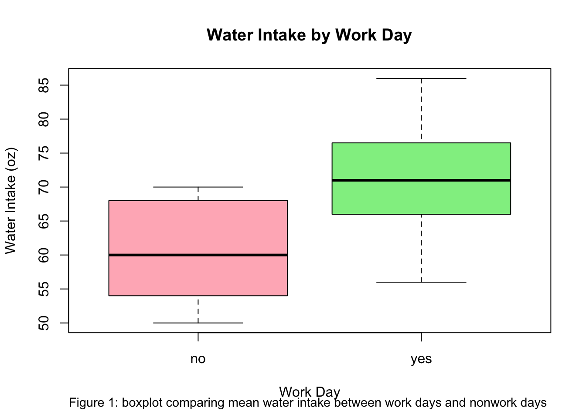
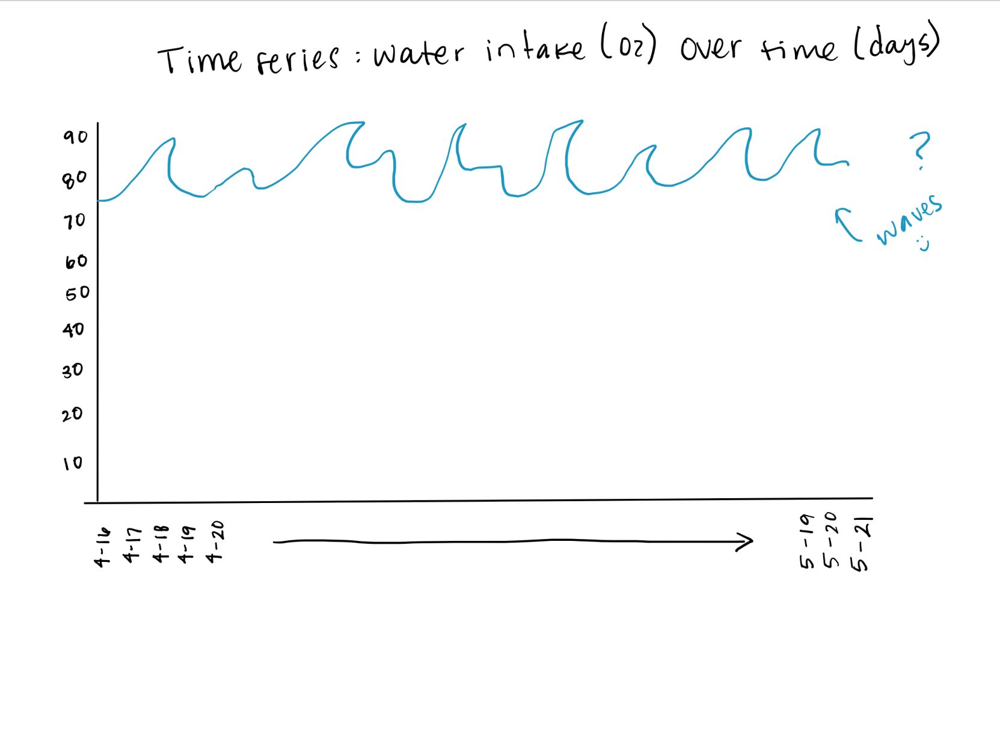
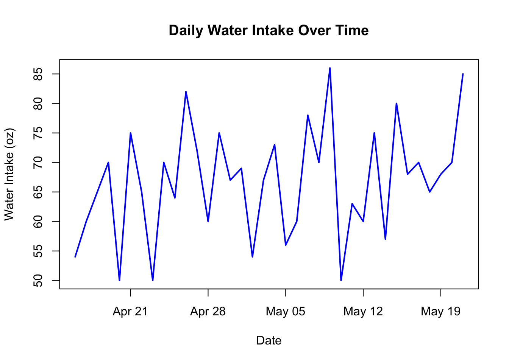
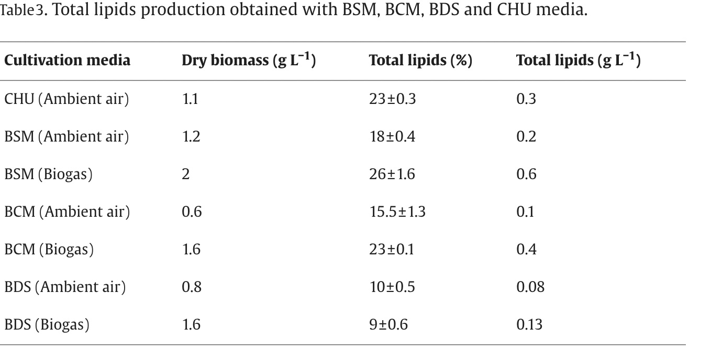

── Attaching core tidyverse packages ──────────────────────── tidyverse 2.0.0 ──
✔ dplyr 1.1.4 ✔ readr 2.1.5
✔ forcats 1.0.0 ✔ stringr 1.5.1
✔ ggplot2 3.5.1 ✔ tibble 3.2.1
✔ lubridate 1.9.4 ✔ tidyr 1.3.1
✔ purrr 1.0.4
── Conflicts ────────────────────────────────────────── tidyverse_conflicts() ──
✖ dplyr::filter() masks stats::filter()
✖ dplyr::lag() masks stats::lag()
ℹ Use the conflicted package (<http://conflicted.r-lib.org/>) to force all conflicts to become errors
library(here)
here() starts at /Users/danielalopez/Desktop/GITHUB/ENVS-193DS_HW3-2-
library(flextable)
Attaching package: 'flextable'
The following object is masked from 'package:purrr':
compose
library(janitor)
Attaching package: 'janitor'
The following objects are masked from 'package:stats':
chisq.test, fisher.test
library(readxl)
Problem 1
a. I could calculate the mean of my water intake on workdays compared to non-work days because I have to take longer bike rides and I am on my feet a lot longer
b. Visualization
#name hydration datahydrationdata <-read.csv ("SM 193DS - Sheet1.csv")#clean data to all lower case and no spaceshydration_clean <- hydrationdata |>rename(water_intake_oz ="water.intake..oz.",work_day ="work.day" ) |>select(Date, water_intake_oz, work_day) |>mutate(work_day=tolower(trimws(work_day)),water_intake_oz=as.numeric(water_intake_oz) )mean_water_intake <- hydration_clean |>group_by(work_day) |>summarise(mean_intake=mean(water_intake_oz, na.rm =TRUE))#make boxplot with. work day and water intake in pink and greenboxplot(water_intake_oz ~ work_day, data = hydration_clean,main ="Water Intake by Work Day",xlab ="Work Day",ylab ="Water Intake (oz)",col =c("lightpink", "lightgreen")) #made a caption for the boxplotmtext("Figure 1: boxplot comparing mean water intake between work days and nonwork days ",side=1, line=3.6, cex=0.9, col ="black")

d.
flextable(mean_water_intake)
work_day
mean_intake
no
60.5625
yes
71.7000
Problem 2
A. Affective visualization
An effective visualization for my data could be a time series plot that tracks water intake as a graph through the days. It would track trends and would allow for me to visually follow the amount of water I intake in a month. The graph could also look like waves to tie in the water and give it a smoother feel!

C. Draft of visualization
#made time plot but had to rename hydration_clean$Date <-as.Date(hydration_clean$Date)plot(hydration_clean$Date, hydration_clean$water_intake_oz,type ="l", col ="blue", lwd =2,xlab ="Date", ylab ="Water Intake (oz)",main ="Daily Water Intake Over Time")

D. Artist statement
In my piece I am trying to display the difference in drinking habits throughout the month, the sharp changes most likely display the change in work day and non-work day. I would say what influenced this is the fact that most scholarly articles contain graphs over time and it feels very official. The graph was made on the programming RStudio. The process included taking note of the amount of water I consumed in a day and put it on Google sheets and found a code to make a graph over time that worked!
Problem 3
A. The statistical tests the author used to answer his main research question is a T-test. Some valuable questions included in the article are “Can microalgae cultivation using livestock wastewater and biogas improve biomass and bioenergy production while treating wastewater”. They used a t-test to find the microalgal biomass concentration and used a logistic regression model to understand the curve of micro algae for different kinds of cultivating conditions.

B. Visual Clarity
The table was extremely clear in representing how the different types of cultivating medias make a difference in the total lipids.
C. Aesthetic Clarity
I believed the author handled “visual clutter” very well. It was extremely concise and the bold was only used for the headers which made it very easy to read.
D. Recommendations
The only chaneg I would make would be to organize the cultivating medias depending on at least one of the lipis. I would probably recommend a bar chart where all of the kinds of cultivating medias showed the total lipids they produced. I would organize the medias lowest to highest lipid count to make it easier to read.